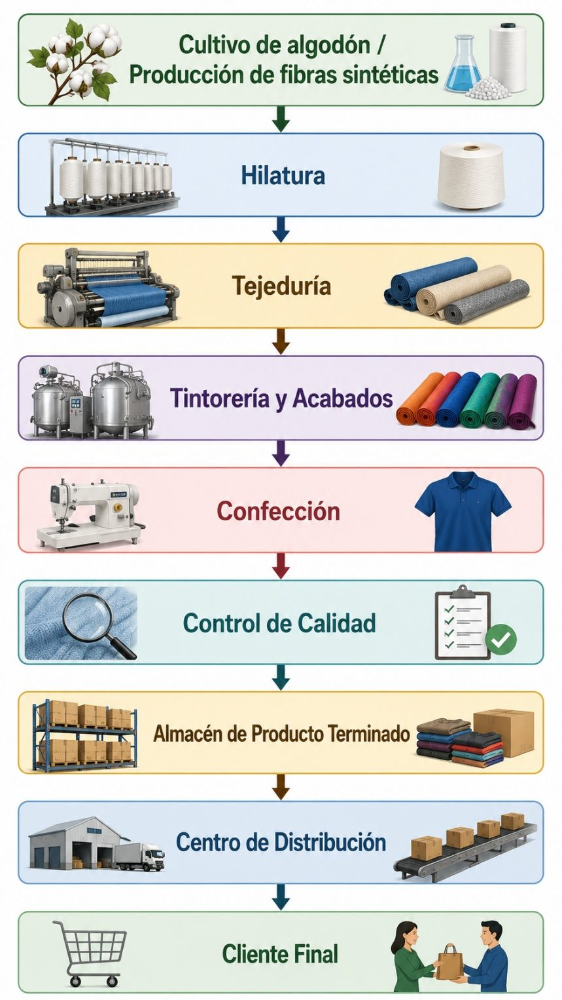

Unidad III · Tema 3.1
Cadena de suministro en la empresa textil
Conjunto de empresas, organizaciones y actividades que participan desde la obtención de la materia prima hasta la entrega del producto terminado al consumidor final. No se trata únicamente de mover mercancías, sino de coordinar eficientemente todas las operaciones para generar valor.
3.1 ¿Qué es una cadena de suministro?
En el contexto industrial textil, una cadena de suministro integra el flujo bidireccional de bienes físicos, información y transacciones financieras. La sincronización adecuada entre las etapas evita retrasos acumulativos y sobrecostos.
3.2 Cadena de suministro de una empresa textil
El proceso de manufactura textil transita por una secuencia ordenada de transformaciones técnicas:

Comprueba tu comprensión
¿Cómo afecta un retraso en la fase de tintorería y acabado a la programación de corte y ensamble en la confección final de prendas?
Ir a la actividad 3.1Cuando termines los temas de la unidad, aplica lo aprendido en el caso de estudio del negocio "Confecciones ESIT".